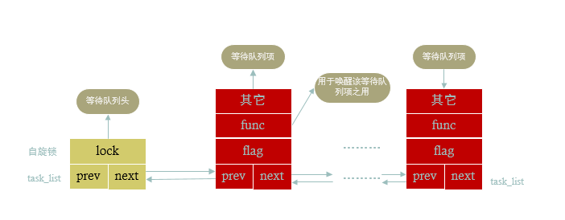

什么是等待队列？
在软件开发中任务经常由于某种条件没有得到满足而不得不进入睡眠状态，然后等待条件得到满足的时候再继续运行，进入运行状态。这种需求需要等待队列机制的支持。Linux中提供了等待队列的机制，该机制在内核中应用很广泛。
等待队列实现了在事件上的条件等待：希望等待特定事件的进程将自己放进合适的等待队列中，并放弃控制权。因此，等待队列表示一组睡眠的进程，当某一条件变为真时，由内核唤醒他们。
在Linux内核中使用等待队列的过程很简单，首先定义一个wait_queue_head，然后如果一个task想等待某种事件，那么调用wait_event（等待队列，事件）就可以了。
系统环境
初始化等待队列
静态初始化
1
|
DECLARE_WAIT_QUEUE_HEAD(name)
|
动态初始化
1
2
|
wait_queue_head_t q;
init_waitqueue_head(&q);
|
将进程加入等待队列
| API接口 |
说明 |
| wait_event(wq, condition) |
将当前进程加入等待队列wq中，并设置进程状态为D，然后睡眠直到condition为true |
| wait_event_timeout(wq, condition, timeout) |
将当前进程加入等待队列wq中，并设置进程状态为D，然后睡眠直到condition为true,即使condition不为true，如果超时后，也结束睡眠状态 |
| wait_event_cmd(wq, condition, cmd1, cmd2) |
跟wait_event类似，只不过在睡眠前执行cmd1，睡眠后执行cmd2 |
| wait_event_interruptible(wq, condition) |
跟wait_event类似，只不过设置进程的状态为S |
| wait_event_interruptible_timeout(wq, condition, timeout) |
跟wait_event_timeout 类似，只不过设置进程的状态为S |
| wait_event_killable(wq, condition) |
跟wait_event类似,只不过睡眠后，可以接受信号 |
唤醒等待队列中的进程
| API接口 |
说明 |
| wake_up |
唤醒等待队列上的一个进程，考虑TASK_INTERRUPTIBLE 和TASK_UNINTERRUPTIBLE |
| wake_up_nr |
唤醒等待队列上的nr个进程，考虑TASK_INTERRUPTIBLE 和TASK_UNINTERRUPTIBLE |
| wake_up_all |
唤醒等待队列上的所有进程，考虑TASK_INTERRUPTIBLE 和TASK_UNINTERRUPTIBLE |
| wake_up_locked |
跟wake_up类似，只是调用时已经确保加锁了 |
| wake_up_all_locked |
跟wake_up_all类似，只是调用时已经确保加锁了 |
| wake_up_interruptible |
唤醒等待队列上的一个进程，只考虑TASK_INTERRUPTIBLE |
| wake_up_interruptible_nr |
唤醒等待队列上的nr个进程，只考虑TASK_INTERRUPTIBLE |
| wake_up_interruptible_all |
唤醒等待队列上的所有进程，只考虑TASK_INTERRUPTIBLE |
| wake_up_interruptible_sync |
|
示例程序
首先，我解释一下示例程序。
在示例程序中，有两个地方唤醒等待队列中的进程:
- 一处是在
read 函数（cat /proc/test_wait_queue）中
- 另一处在模块退出函数中。
在模块初始化函数中，我们创建了一个内核线程（MyWaitThread）,该内核线程总是等待wait_queue_flag不为0，它一直睡眠，直到有人唤醒它。当唤醒后，它检查wait_queue_flag的值，如果是1，说明唤醒来自read函数，此时它打印read count 信息，并继续睡眠，如果wait_queue_flag的值是2，说明唤醒来自模块退出函数，此时给内核线程退出。
代码如下：
1
2
3
4
5
6
7
8
9
10
11
12
13
14
15
16
17
18
19
20
21
22
23
24
25
26
27
28
29
30
31
32
33
34
35
36
37
38
39
40
41
42
43
44
45
46
47
48
49
50
51
52
53
54
55
56
57
58
59
60
61
62
63
64
65
66
67
68
69
70
71
72
73
74
75
76
77
78
79
80
81
82
83
84
|
#include <linux/module.h>
#include <linux/kernel.h>
#include <linux/init.h>
#include <linux/proc_fs.h>
#include <linux/seq_file.h>
#include <linux/wait.h>
#include <linux/kthread.h>
static int read_count = 0;
static struct task_struct *wait_thread;
// Initializing waitqueue statically
DECLARE_WAIT_QUEUE_HEAD(test_waitqueue);
static int wait_queue_flag = 0;
static int my_waitqueue_show(struct seq_file *m, void *v)
{
printk(KERN_ALERT "Read function\n");
seq_printf(m, "read_count = %d\n", read_count);
wait_queue_flag = 1;
wake_up_interruptible(&test_waitqueue); // wake up only one process from wait queue
return 0;
}
static int my_waitqueue_open(struct inode *inode, struct file *filp)
{
return single_open(filp, my_waitqueue_show, NULL);
}
static struct file_operations test_wait_queue_fops = {
.open = my_waitqueue_open,
.read = seq_read,
.llseek = seq_lseek,
.release = single_release,
};
static int wait_function(void *unused)
{
while(1) {
printk(KERN_ALERT "Waiting For Event...\n");
// sleep until wait_queue_flag != 0
wait_event_interruptible(test_waitqueue, wait_queue_flag != 0);
if (wait_queue_flag == 2) {
printk(KERN_ALERT "Event Came From Exit Function\n");
return 0;
}
printk(KERN_ALERT "Event Came From Read Function - %d\n", ++read_count);
wait_queue_flag = 0;
}
return 0;
}
static int __init mywaitqueue_init(void)
{
struct proc_dir_entry *pe;
printk(KERN_ALERT "[Hello] mywaitqueue \n");
pe = proc_create("test_wait_queue", 0644, NULL, &test_wait_queue_fops);
if (!pe)
return -ENOMEM;
// Create the kernel thread with name "MyWaitThread"
wait_thread = kthread_create(wait_function, NULL, "MyWaitThread");
if (wait_thread) {
printk(KERN_ALERT "Thread created successfully\n");
wake_up_process(wait_thread);
} else {
printk(KERN_ALERT "Thread creation failed\n");
}
return 0;
}
static void __exit mywaitqueue_exit(void)
{
wait_queue_flag = 2;
wake_up_interruptible(&test_waitqueue);
printk(KERN_ALERT "[Goodbye] mywaitqueue\n");
remove_proc_entry("test_wait_queue", NULL);
}
module_init(mywaitqueue_init);
module_exit(mywaitqueue_exit);
MODULE_LICENSE("GPL");
|
Makefile如下：
1
2
3
4
5
6
7
8
9
10
|
ifneq ($(KERNELRELEASE), )
obj-m := mywaitqueue.o
else
KERNELDIR ?=/lib/modules/$(shell uname -r)/build
PWD := $(shell pwd)
all:
$(MAKE) -C $(KERNELDIR) M=$(PWD) modules
clean:
$(MAKE) -C $(KERNELDIR) M=$(PWD) clean
endif
|
编译成功后，插入模块：
1
|
# insmod mywaitqueue.ko
|
检查dmesg
1
2
3
|
[167034.774139] [Hello] mywaitqueue
[167034.774330] Thread created successfully
[167034.774393] Waiting For Event...
|
读两次
1
2
3
4
|
# cat /proc/test_wait_queue
read_count = 0
# cat /proc/test_wait_queue
read_count = 1
|
查看dmesg
1
2
3
4
5
6
|
[167047.972321] Read function
[167047.972387] Event Came From Read Function - 1
[167047.972390] Waiting For Event...
[167049.779541] Read function
[167049.779615] Event Came From Read Function - 2
[167049.779618] Waiting For Event...
|
卸载模块rmmod mywaitqueue,dmesg如下：
1
2
|
[167110.886314] [Goodbye] mywaitqueue
[167110.886317] Event Came From Exit Function
|
Linux中等待队列的实现
等待队列应用广泛，但是内核实现却十分简单。其涉及到两个比较重要的数据结构：
wait_queue_head_t
该结构描述了等待队列的链头，其包含一个链表和一个原子锁，结构定义如下：
1
2
3
4
5
|
struct __wait_queue_head {
spinlock_t lock;
struct list_head task_list;
};
typedef struct __wait_queue_head wait_queue_head_t;
|
wait_queue_t
该结构是对一个等待任务的抽象。每个等待任务都会抽象成一个wait_queue_t，并且挂载到wait_queue_head_t上。该结构定义如下：
1
2
3
4
5
6
7
8
|
typedef struct __wait_queue wait_queue_t;
struct __wait_queue {
unsigned int flags;
void *private;
wait_queue_func_t func;
struct list_head task_list;
};
|
wait_event用于将当前进程加入某一等待队列中，同时将该进程的状态修改为等待状态。而wake_up则用于将某一个等待队列上面所有的等待进程唤醒，也就是将其从等待队列上面删掉，同时将其的进程状态置为可运行状态。
等待队列的结构如下图所示:

API细节
上节介绍的API可以直接使用，但是内核系统比较复杂，有些情况不是简单的等待某个变量条件为真，所以，当我们了解了wait_event和wake_up的细节，我们编写起内核代码才能游刃有余。
wait_event细节
1
2
3
4
5
6
7
8
9
10
11
12
13
14
15
16
17
18
19
20
21
22
23
24
25
26
27
28
29
30
31
|
#define __wait_event(wq, condition) \
do { \
DEFINE_WAIT(__wait); \
\
for (;;) { \
prepare_to_wait(&wq, &__wait, TASK_UNINTERRUPTIBLE); \
if (condition) \
break; \
schedule(); \
} \
finish_wait(&wq, &__wait); \
} while (0)
/**
* wait_event - sleep until a condition gets true
* @wq: the waitqueue to wait on
* @condition: a C expression for the event to wait for
*
* The process is put to sleep (TASK_UNINTERRUPTIBLE) until the
* @condition evaluates to true. The @condition is checked each time
* the waitqueue @wq is woken up.
*
* wake_up() has to be called after changing any variable that could
* change the result of the wait condition.
*/
#define wait_event(wq, condition) \
do { \
if (condition) \
break; \
__wait_event(wq, condition); \
} while (0)
|
- 第
28行代码说明如果条件为真，则直接返回，否则调用__wait_event
- 第
3定义了一个wait_queue_t成员
- 第
6到10行代码将当前进程添加到等待队列中，此时如果条件为真，则直接调用finish_wait退出等待，否则，调用schedule()进行睡眠，等待wake_up唤醒它
wake_up细节
1
2
3
4
5
6
7
8
9
10
11
12
13
14
15
16
17
18
19
20
21
22
23
24
25
26
27
28
29
30
31
32
33
34
35
36
37
38
39
40
41
42
43
44
45
|
/*
* The core wakeup function. Non-exclusive wakeups (nr_exclusive == 0) just
* wake everything up. If it's an exclusive wakeup (nr_exclusive == small +ve
* number) then we wake all the non-exclusive tasks and one exclusive task.
*
* There are circumstances in which we can try to wake a task which has already
* started to run but is not in state TASK_RUNNING. try_to_wake_up() returns
* zero in this (rare) case, and we handle it by continuing to scan the queue.
*/
static void __wake_up_common(wait_queue_head_t *q, unsigned int mode,
int nr_exclusive, int wake_flags, void *key)
{
wait_queue_t *curr, *next;
list_for_each_entry_safe(curr, next, &q->task_list, task_list) {
unsigned flags = curr->flags;
if (curr->func(curr, mode, wake_flags, key) &&
(flags & WQ_FLAG_EXCLUSIVE) && !--nr_exclusive)
break;
}
}
/**
* __wake_up - wake up threads blocked on a waitqueue.
* @q: the waitqueue
* @mode: which threads
* @nr_exclusive: how many wake-one or wake-many threads to wake up
* @key: is directly passed to the wakeup function
*
* It may be assumed that this function implies a write memory barrier before
* changing the task state if and only if any tasks are woken up.
*/
void __wake_up(wait_queue_head_t *q, unsigned int mode,
int nr_exclusive, void *key)
{
unsigned long flags;
spin_lock_irqsave(&q->lock, flags);
__wake_up_common(q, mode, nr_exclusive, 0, key);
spin_unlock_irqrestore(&q->lock, flags);
}
EXPORT_SYMBOL(__wake_up);
#define wake_up(x) __wake_up(x, TASK_NORMAL, 1, NULL)
|
- 最主要的函数为
__wake_up_common，其遍历等待队列的task_list链表，然后调用等待实体的func函数。
- 第
19行通过flag和nr_exclusive来决定是唤醒1个等待的进程还是全部等待的进程。
总结
当我们理解掌握了上述API的实现细节，我们就可以游刃有余的阅读和编写有关等待队列的相关内核代码。举个例子：内核的内存管理系统中，在内存回收这块，有个专门的kswapd内核线程进行内存回收：
- 在内存充足时，其进行睡眠等待内存不足时被唤醒
- 在内存不足时，有很多内核执行路径上回唤醒
kswapd内核线程
由于内存管理比较复杂，在kswapd等待睡眠时并没有直接使用本文中讲述的API，而是使用了更底层的函数方法，比如：
prepare_to_waitschedulefinish_wait
参考文档
https://embetronicx.com/tutorials/linux/device-drivers/waitqueue-in-linux-device-driver-tutorial/
Author
laoqinren
LastMod
2019-02-21
Markdown
The Markdown version »